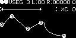

Gate In
Opens the envelope gate.
Retrigger In
Retriggers the envelope.
VCA Audio In
Audio input for the voltage-controlled attenuator.
10V Envelope Out
Envelope output with a peak at 10V.
5V Envelope Out
Envelope output with a peak at 5V.
VCA Audio Out
Audio output for the voltage-controlled attenuator.